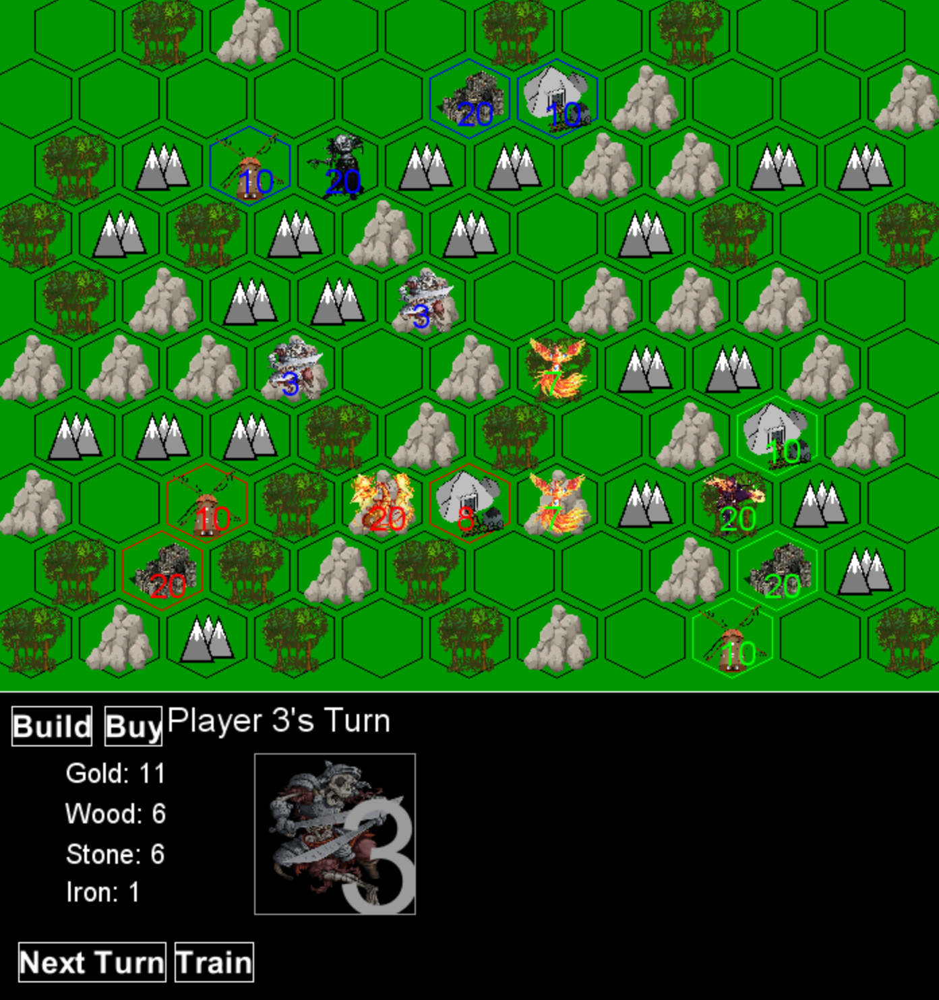
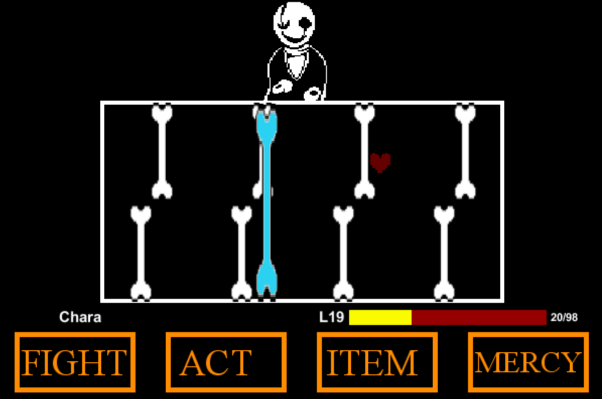

Back
The Art of War. A board-game strategy game which players 2-4 players. My final project for the Greenfoot unit.  Download Game
A fan-made Gaster battle, inspired by Undertale made by Toby Fox.  Download Game